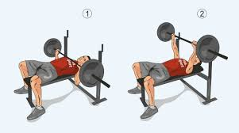

Date: 25 August 2048 | Author: Michael

Жим лёжа — базовое физическое упражнение со свободным весом. Выполняющий упражнение ложится на скамейку, опускает гриф до касания с грудью и поднимает до полного выпрямления в локтевом суставе. Используется в бодибилдинге как упражнение для развития больших и малых грудных мышц, трицепсов и переднего пучка дельтовидной мышцы.
ным весом. Выполняющий упражнение ложится на скамейку, опускает гриф до касания с грудью и поднимает до полного выпрямления в локтевом суставе. Используется в бодибилдинге как упражнение для развития больших и малых грудных мышц, трицепсов и переднего пучка дельтовидной мышцы.
базовое физическое упражнение со свободным весом. Выполняющий упражнение ложится на скамейку, опускает гриф до касания с грудью и поднимает до полного выпрямления в локтевом суставе. Используется в бодибилдинге как упражнение для развития больших и малых грудных мышц, трицепсов и переднего пучка дельтовидной мышцы.
базовое физическое упражнение со свободным весом. Выполняющий упражнение ложится на скамейку, опускает гриф до касания с грудью и поднимает до полного выпрямления в локтевом суставе. Используется в бодибилдинге как упражнение для развития больших и малых грудных мышц, трицепсов и переднего пучка дельтовидной мышцы.